This About Me Section is not a typical About Me Section in resumes. Typically, an About Me section is a quick summary of an applicant, professionally, such as their most important professional accomplishments and positions. Having covered that in the other sections of the resume and just now entering the professional field for engineering and coding, I thought it would be more prudent and fun to share who I am personally and not just as a professional. If you'd like to learn more about me, continue down below. Otherwise, be sure to check out the other links of my resume.

I was born on October 29th, 1998, the same day as John Glenn's last space flight.

I was born and raised in Arlington, Texas until moving to Weatherford, Texas when I was 10 years old, so I have lived in Texas my whole life.
I have 2 older brothers, no sisters, and a loving mom and dad.
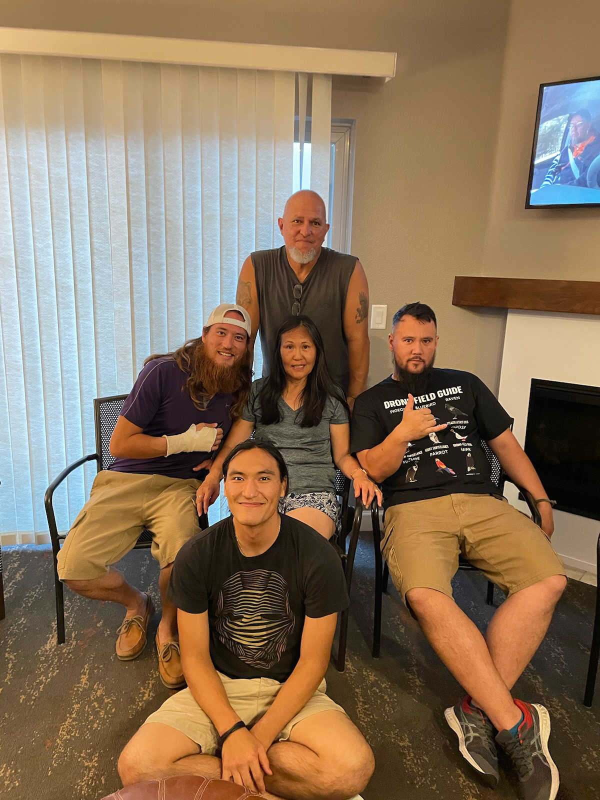We also had many dogs growing up.
 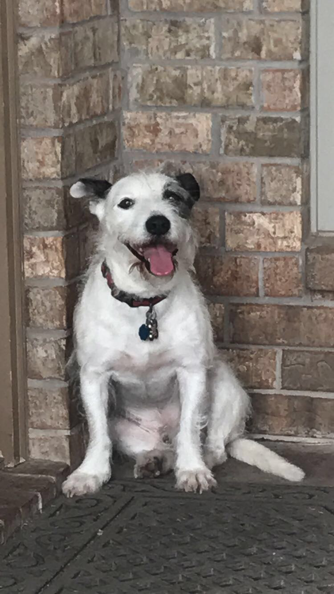
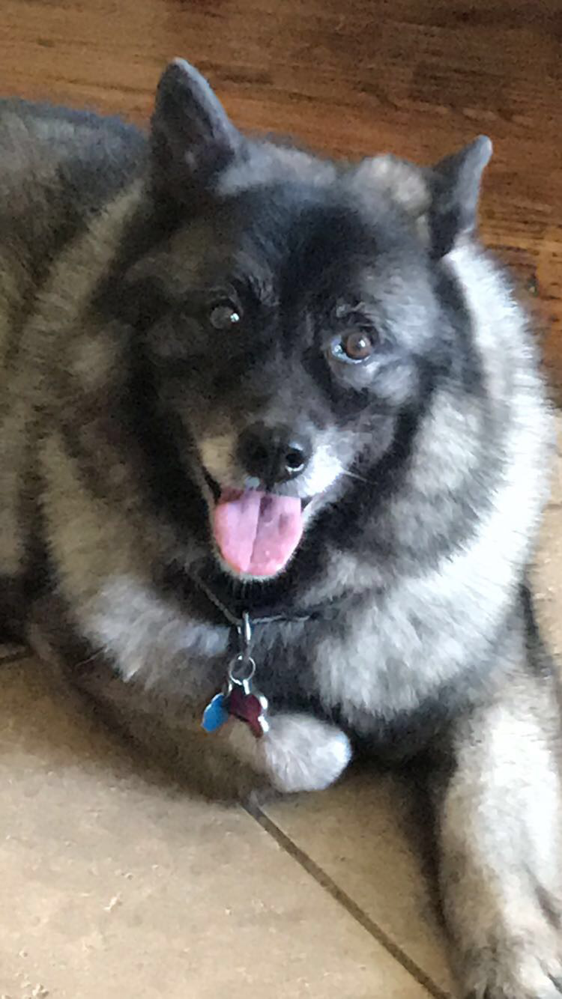
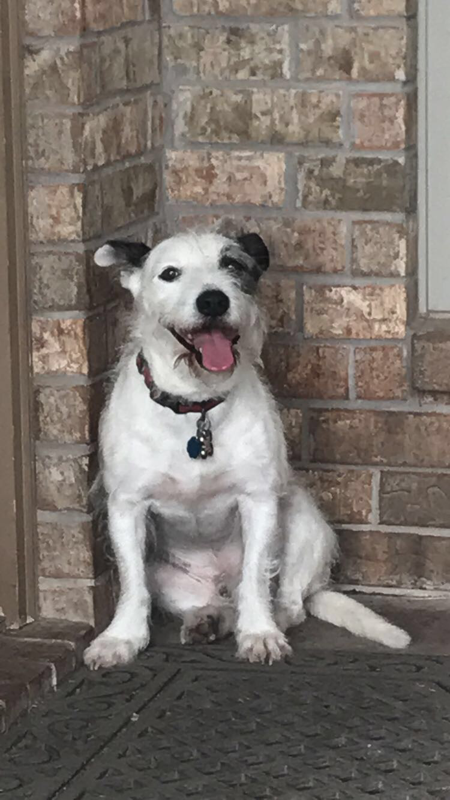
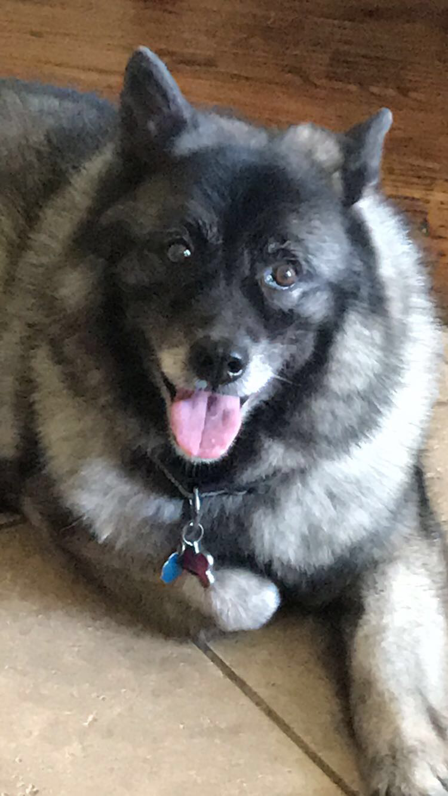
In high school, I was nearly a straight A student. I was in top 10% of my class. I worked at a local pizza place. I was in some extracurriculars including a robotics club, a CAD modeling club, and some sports such as football.
 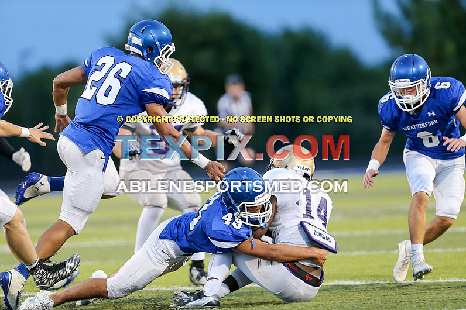
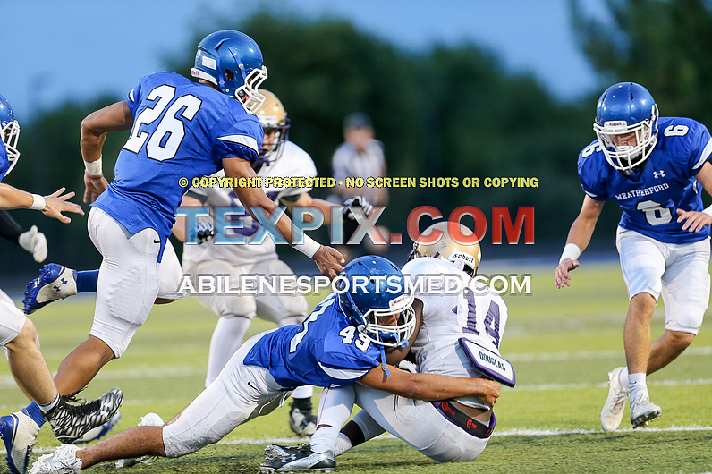
My favorite aerospace related memories include going to the Johnson Space Center and a Blue Angels Air Show where my brother got a F/A 18 model, and I got a B-2 Stealth Bomber model which became my favorite plane.


I recently got married to the love of my life this past May. We moved in together and we now have a cat together.


I'm a big fan of anime, video games, Marvel, and DC, and I've recently gotten into fantasy novels especially the Wheel of Time.
I love to cook and I have a guitar that I have been trying to learn how to play since I was 10 though I never make the time to do more than just to memorize the chords and a song at a time.
I like to play basketball, workout, and go for walks whenever I find the free time to stay active.
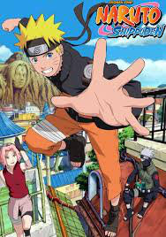 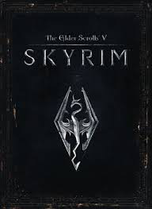 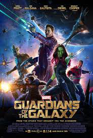 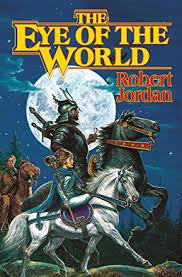Moving forward, I'm hoping to move somewhere notably colder or stay somewhere in Texas, though neither are necessary. A few years from now, I want to expand my little family, getting a dog and hopefully a child.
For now, I'm most excited to begin my professional career in an industry that I love. I hope to hear from you soon.
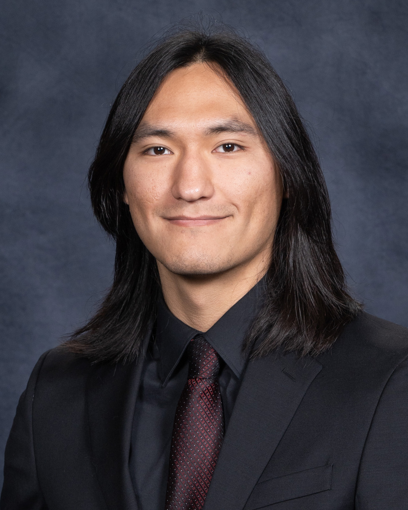